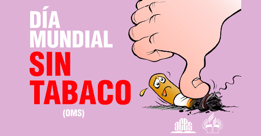

La Organizacion Mundial de la Salud (OMS) celebra este dia para que las personas hagan conciencia de que fumar les puede traer grandes problemas de salud que puede llegar hasta la muerte, por eso es importante hacer campañas en donde se le brinde esta infomacion para que asi puedan tomar mejores decisiones.
En la ctualidad muchas personas lo consumen por gusto, por que quieren despejarse de sus problemas; y esto provoca una adicció.
En México cada día fallecen 118 personas a causa del tabaquismo: 43,246 muertes al año que podrían ser evitadas, de acuerdo con cifras sobre la Carga de Enfermedad Atribuible al Tabaquismo en México, un documento coordinado por el Departamento de Investigación sobre Tabaco del INSP.
De acuerdo con Organización Mundial de la Salud el tabaco es la primera causa de invalidez y muerte prematura del mundo. “El tabaquismo está directamente relacionado con la aparición de 29 enfermedades, de las cuales 10 son diferentes tipos de cáncer y de más del 50 % de las enfermedades cardiovasculares. El fumar es directamente responsable de aproximadamente el 90 % de las muertes por cáncer de pulmón y aproximadamente el 80-90 % de la enfermedad pulmonar obstructiva crónica (EPOC) y enfisema.”